الهدف 1: القضاء على الفقر
لا بد من أن يكون النمو الاقتصادي شاملا للجميع بحيث يتيح وظائف مستدام ويعزز المساواة.
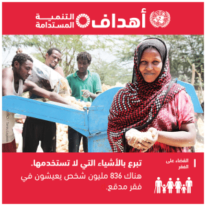
الهدف2: القضاء التام على الجوع
يتيح قطاع الغذاء والزراعة حلولا رئيسية للتنمية، وهما قطاعان محوريان في جهود القضاء على الجوع والفقر.
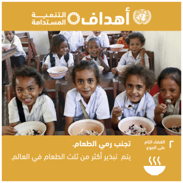
الهدف 3: الصحة الجيدة والرفاه
ضمان أنماط العيش السليم وتعزيز الرفاه للجميع هما أمران ضروريان لتحقيق التنمية المستدامة.
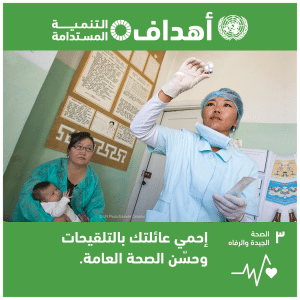
الهدف 4: التعليم الجيد
الحصول على التعليم الجيد هو الأساس في تحسين معايش الناس وتحقيق التنمية المستدامة.
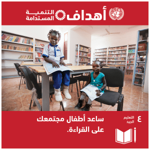
الهدف 5: المساواة بين الجنسين
المساواة بين الجنسين ليست حقا أصيلا من حقوق الإنسان وحسب، وأنما كذلك ضرورة من ضروريات وجود عالم مستدام ينعم بالإزدهار والسلام.
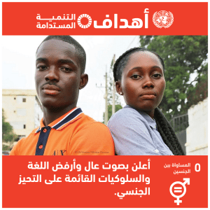
الهدف 6: المياة النظيفة والنظافة الصحية
إمكانية حصول الجميع على المياه النظيفة هي مكون أساسي من مكونات العالم الذي نبتغيه.
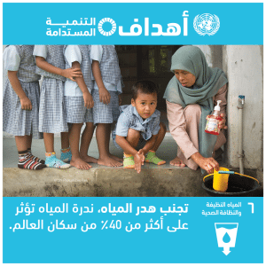
الهدف 7: طاقة نظيفة وبأسعار معقولة
الطاقة هي مسألة مركزية في كل التحديات الماثلة والفرص المتاحة.
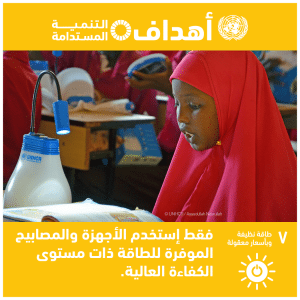
الهدف 8: العمل اللائق ونمو الاقتصاد
علينا أن نعيد النظر في الأفكار السائدة في اقتصادنا وأدواته والسياسات الاجتماعية الرامية إلى القضاء على الفقر
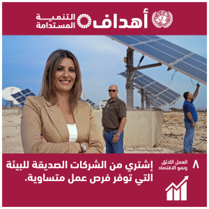
الهدف 9: الصناعة والابتكار والهياكل الأساسية
الاستثمار في الهياكل الأساسية هو شأن حاسم في تحقيق التنمية المستدامة.
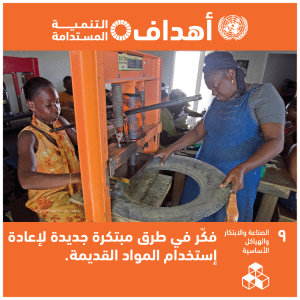
الهدف 10: الحد من أوجه عدم المساواة
الحد من التفاوت داخل البلدان وفي ما بينها.
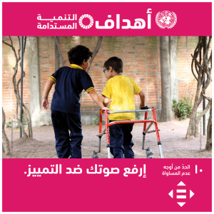
الهدف 11: مدن ومجتمعات محلية مستدامة
التغلب على التحديات التي تواجهها المدن بطرائق تتيح لتلك المدن مواصلة الانتعاش والنمو.
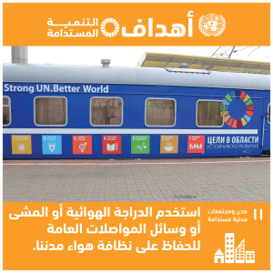
الهدف 12: الاستهلاك والإنتاج المسؤولان
تستهدف أنماط الاستهلاك والإنتاج المستدامة ”إنتاج المزيد بشكل أفضل وبتكلفة أقل.
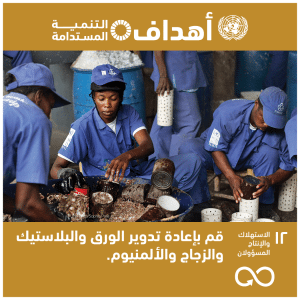
الهدف 13: العمل المناخي
يضمن التوصل إلى حلول لتغير المناخ عدم تعثر التقدم المحرز بسبب تلك الظاهرة، وتمتع اقتصادات البلدان بالصحة والقدرة على التكيف.
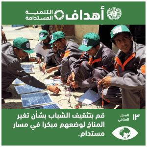
الهدف 14: الحياة تحت الماء
إن محيطات العالم هي التي تقف وراء النظم العالمية التي تجعل كوكب الأرض صالحاً لسكنى البشرية.
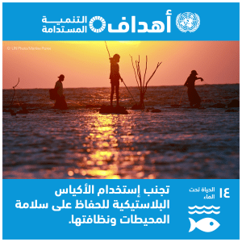
الهدف 15: الحياة في البر
تشكل إزالة الغابات والتصحر تحديين رئيسيين يؤثران في معايش ملايين الناس. وتُبذل حثيثة في إدارة الغابات ومكافحة التصحر.
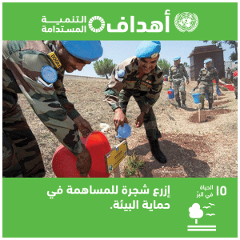
الهدف 16: السلام والعدل والمؤسسات القوية
تشجيع وجود المجتمعات السلمية الشاملة للجميع، وتوفير إمكانية اللجوء إلى القضاء، وبناء مؤسسات فعالة خاضعة للمساءلة.
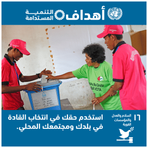
الهدف 17: عقد الشراكات لتحقيق الأهداف
يتطلب تحقيق التنمية المستدامة تكوين شراكات ناجعة بين الحكومات والقطاع الخاص والمجتمع المدني تُبنى على أهداف ورؤى مشتركة.
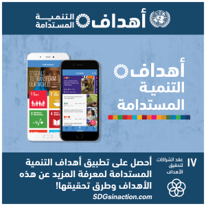